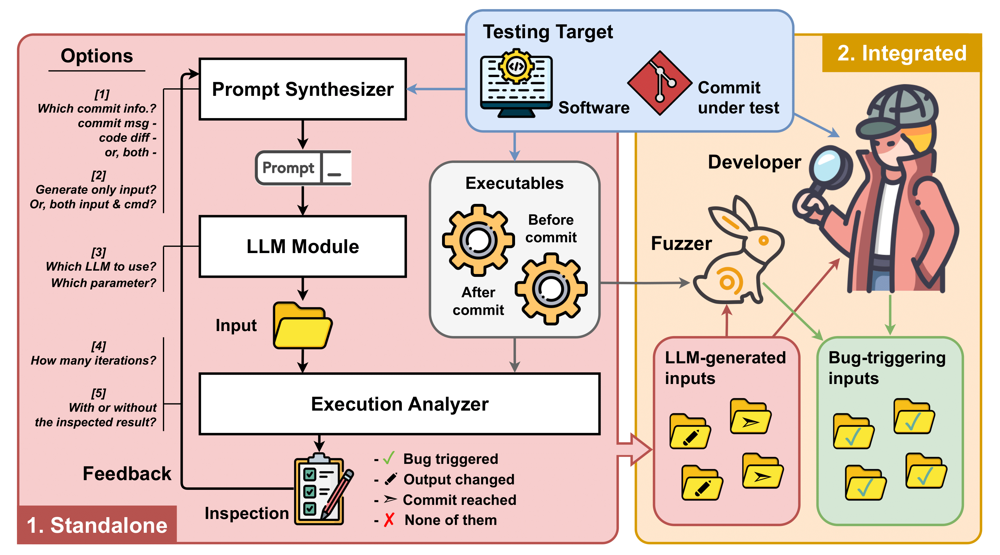
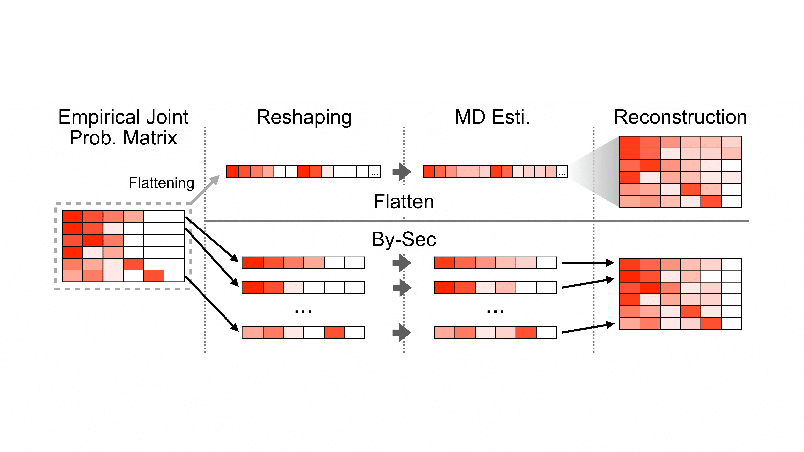
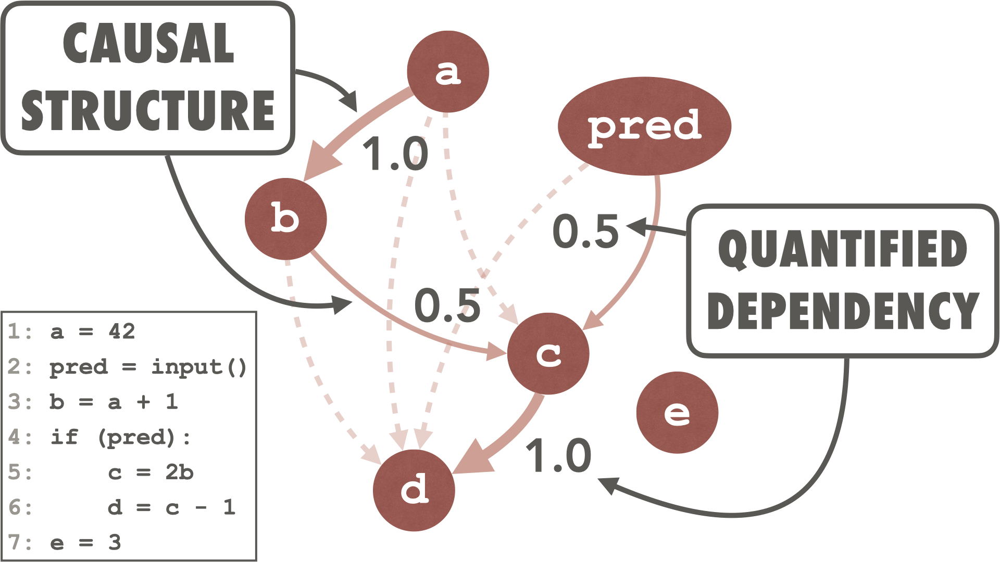
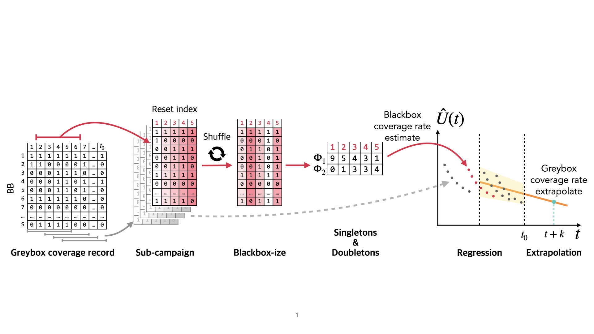
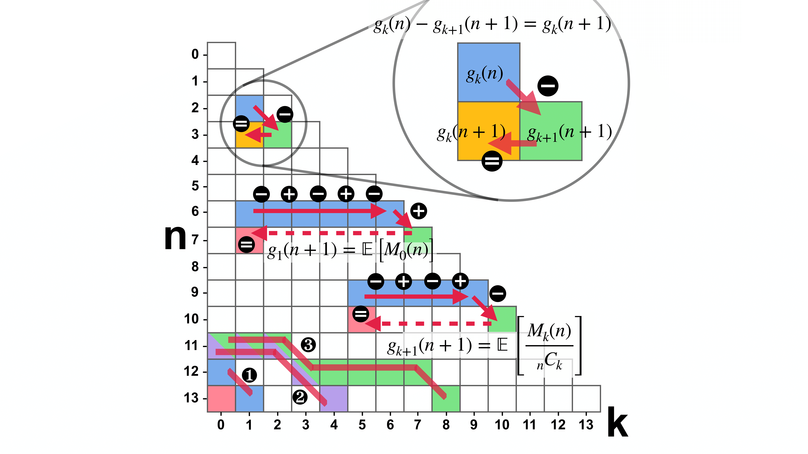
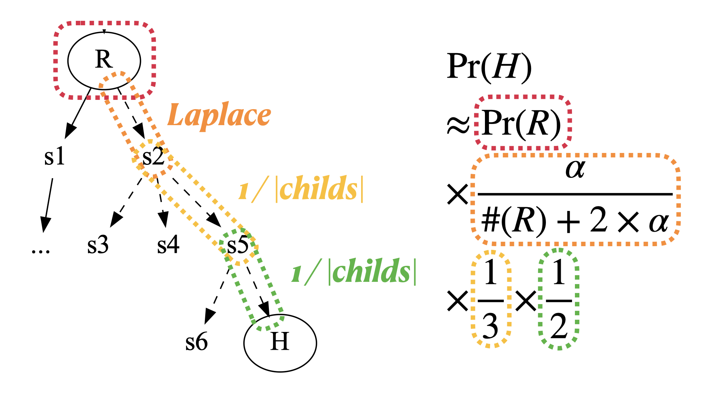
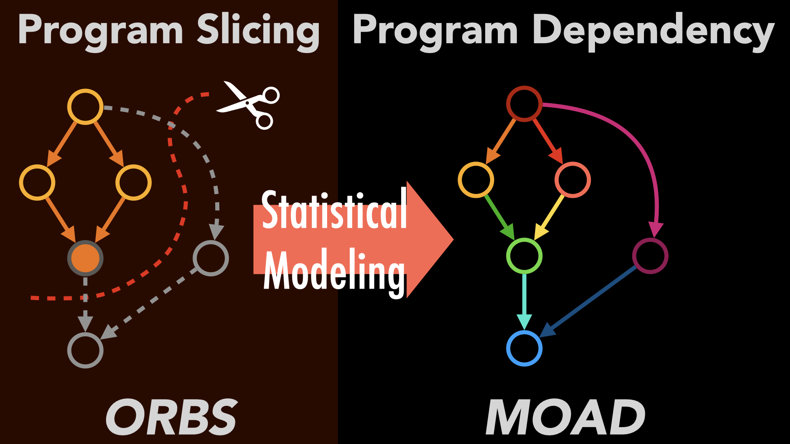
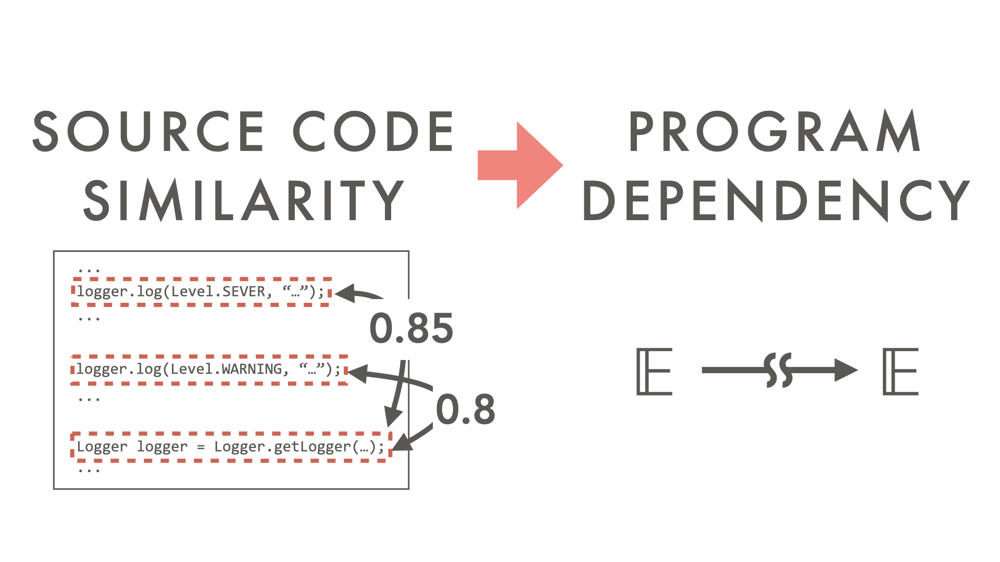

I am a postdoctoral researcher at the Max Planck Institute for Security and Privacy in Bochum, Germany. I'm working with Dr. Marcel Böhme in the Software Security group. My research interest lies in program analysis and software testing. The overarching objective of my research is making program analysis scalable by addressing the challenges associated with the scale and complexity of software systems and achieving practical software testing in real-world scenarios. I utilize statistical methods to analyze dynamic information from program execution, facilitating the reasoning of a program's semantic properties and addressing empirical challenges in software testing. I got my Ph.D. in Computation Intelligence and Software Engineering Lab (COINSE) at KAIST, advised by Dr. Shin Yoo in 2022.
seongmin.lee [at] mpi-sp.org
MPI-SP, Universitätsstraße 110, 44799 Bochum, Nordrhein-Westfalen, Germany
Integrated Master's & Ph.D in School of Computing, KAIST
- Title: Statistical Program Dependence ApproximationSep. 2016 - Aug. 2022
B.S. in School of Computing, KAIST
(Double major: Department of Mathematical Sciences)
Feb. 2012 - Aug. 2016


Accounting for Missing Events in Statistical Information Leakage Analysis
IEEE/ACM International Conference on Software Engineering (ICSE), 2025


Extrapolating coverage rate in greybox fuzzing
IEEE/ACM International Conference on Software Engineering (ICSE), 2024


Statistical Reachability Analysis
ACM Joint European Software Engineering Conference and Symposium on the Foundations of Software Engineering (ESEC/FSE), 2023

Observation-based approximate dependency modeling and its use for program slicing
Journal of Systems and Software (JSS), 2021
Effectively sampling higher order mutants using causal effect
IEEE International Conference on Software Testing,
Verification and Validation Workshops (ICSTW), 2021
Scalable and approximate program dependence analysis
IEEE/ACM International Conference on
Software Engineering: Companion Proceedings, 2020

MOAD: Modeling observation-based approximate dependency
International Working Conference on Source Code
Analysis and Manipulation (SCAM), 2019
Classifying false positive static checker alarms in continuous integration using convolutional neural networks
IEEE Conference on Software Testing, Validation and
Verification (ICST), 2019
PyGGI: Python General framework for Genetic Improvement
Korea Software Congress (KSC), 2017
Hyperheuristic Observation Based Slicing of Guava
International Symposium on Search Based Software Engineering
(SSBSE), 2017
Amortised deep parameter optimisation of GPGPU work group size for OpenCV
International Symposium on Search Based Software Engineering
(SSBSE), 2016